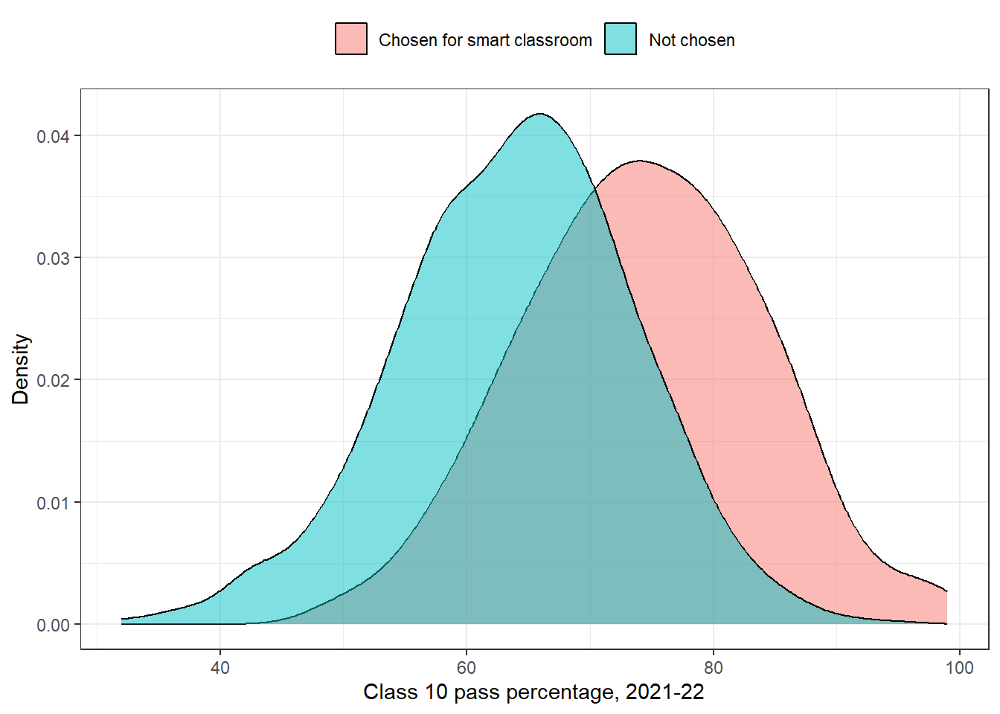
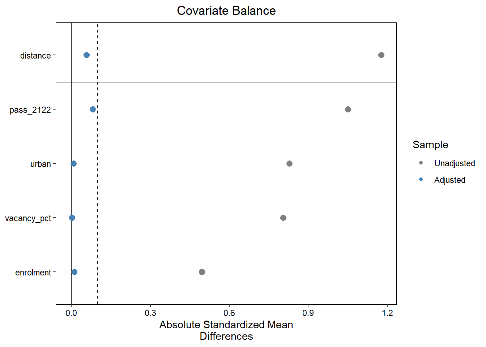
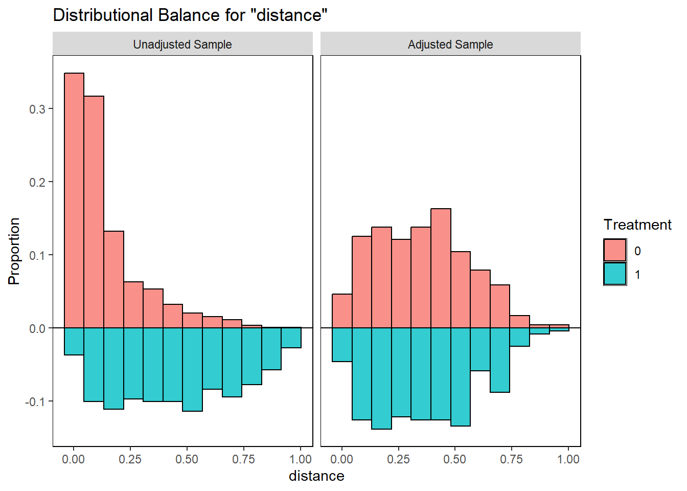

45 Measuring the Impact of a Scheme
In 2022-23 a State gave smart classrooms to about 300 of its 1,500 government high schools. Each school got a projector, a digital board and a library of lessons. Two years later the department reports a success. Pass rates in smart-classroom schools are far higher than in other schools. A performance audit must ask whether the scheme really caused this.
This is one of the most common questions in performance audit. Did the scheme achieve its outcomes? The natural way to answer it is to compare the beneficiaries with everyone else. But this comparison is often misleading. Beneficiaries are rarely chosen at random. The schools that got smart classrooms may have been larger, urban and better run even before the scheme. They would have done better anyway. This is called selection bias, and it can make a weak scheme look strong.
Matching makes the comparison fair. It pairs each beneficiary with a non-beneficiary that looked the same before the scheme. If the two still differ after the scheme, the scheme is the most likely reason.
In this chapter we will first make the naive comparison and see why it misleads. We will then try regression adjustment, from Chapter 40, as one remedy. Next we learn the idea of matching with three schools, and then apply it to all 1,500 with the MatchIt package. Our data has a true effect planted in it, so we can see how close each method comes. The first audit use case turns the result into a finding for the audit report. In the second, matching shows that a skill training scheme made no difference at all.
This chapter uses cobalt, marginaleffects, MatchIt, sandwich and tidyverse. marginaleffects uses sandwich in the background to calculate cluster-robust standard errors. If any of them is missing, install them with the command below. Section C.2 lists the packages of every part.
install.packages(c("cobalt", "marginaleffects", "MatchIt", "sandwich", "tidyverse"))45.1 A little history
The problem is old. Every comparison of people who chose a treatment with people who did not faces it. In 1983 Paul Rosenbaum and Donald Rubin showed that we need not match on every characteristic separately. It is enough to match on one number, the chance of getting the treatment given those characteristics. They called it the propensity score. Since then, matching on the propensity score has been used to evaluate job training, health insurance, school programmes and many other public schemes.
45.2 Prerequisites
We use MatchIt to match, cobalt to check whether the matched groups are alike, and marginaleffects to estimate the effect.
45.3 Our data, smart classrooms in 1,500 schools
An imaginary State has 1,500 government high schools. For each school we know four things from 2021-22, the year before the scheme.
-
urbanis 1 for a school in a town and 0 for a village school. -
enrolmentis the number of students in Class 10. -
vacancy_pctis the percentage of sanctioned teacher posts lying vacant. -
pass_2122is the Class 10 pass percentage in 2021-22.
smart is 1 if the school got a smart classroom in 2022-23. pass_2425 is the Class 10 pass percentage in 2024-25, the outcome the scheme was meant to improve.
We have planted two things. First, schools were not chosen at random. Urban schools, larger schools, schools with better results and schools with fewer vacancies were more likely to be chosen. Second, the smart classroom really does help, but only a little. It raises the pass percentage by exactly 3 percentage points. Our job is to find this 3 in the data.
Code to create the school data
set.seed(123)
n <- 1500
schools <- tibble(
school_id = sprintf("SCH-%04d", 1:n),
urban = rbinom(n, 1, 0.3),
enrolment = round(rlnorm(n, log(60) + 0.3 * urban, 0.45)),
vacancy_pct = round(pmin(pmax(rnorm(n, 18 - 6 * urban, 10), 0), 50)),
pass_2122 = round(pmin(pmax(rnorm(n, 68 + 5 * urban - 0.2 * vacancy_pct, 10), 25), 99), 1)
)
# Planted. Selection. Urban, larger, better and better-staffed schools were more likely to be chosen
chance <- with(schools, plogis(-2.15 + 1.0 * urban + 1.2 * log(enrolment / 60) +
0.11 * (pass_2122 - 68) - 0.05 * (vacancy_pct - 15)))
schools$smart <- rbinom(n, 1, chance)
# Planted. The true effect of a smart classroom is +3 percentage points
true_effect <- 3
schools <- schools |>
mutate(pass_2425 = round(pmin(pmax(
20 + 0.75 * pass_2122 + 2 * urban - 0.12 * vacancy_pct + log(enrolment / 60) +
true_effect * smart + rnorm(n, 0, 5), 20), 100), 1))schools# A tibble: 1,500 × 7
school_id urban enrolment vacancy_pct pass_2122 smart pass_2425
<chr> <int> <dbl> <dbl> <dbl> <int> <dbl>
1 SCH-0001 0 120 5 52.8 0 56.2
2 SCH-0002 1 77 11 81 1 89.7
3 SCH-0003 0 76 4 74.1 0 71.9
4 SCH-0004 1 89 0 69.9 1 77.3
5 SCH-0005 1 74 20 68.8 0 74.4
6 SCH-0006 0 57 27 67.5 0 64.3
7 SCH-0007 0 95 8 73 0 74.7
8 SCH-0008 1 74 9 54.1 0 69.6
9 SCH-0009 0 24 7 81.2 0 76.8
10 SCH-0010 0 55 21 49.7 0 48.9
# ℹ 1,490 more rows298 of the 1,500 schools got a smart classroom.
45.4 The naive comparison
The department compares the pass percentage of smart-classroom schools with that of other schools. Let us do the same.
# A tibble: 2 × 3
smart schools mean_pass_2425
<int> <int> <dbl>
1 0 1202 66.4
2 1 298 78.7The difference looks large. Is it more than chance? The t-test from Section 30.7 answers this.
naive_test <- t.test(pass_2425 ~ smart, data = schools)
naive_test
Welch Two Sample t-test
data: pass_2425 by smart
t = -20.6, df = 438.47, p-value < 2.2e-16
alternative hypothesis: true difference in means between group 0 and group 1 is not equal to 0
95 percent confidence interval:
-13.50236 -11.15035
sample estimates:
mean in group 0 mean in group 1
66.39143 78.71779 Smart-classroom schools passed 12.3 percentage points more students, and the p-value is tiny. The difference is certainly not chance. This is the department’s claim, that pass rates in smart-classroom schools are 12 points higher. Yet we know the true effect is only 3 points. Where do the other 9.3 points come from?
The t-test only tells us that the two groups differ. It does not tell us why. Let us compare the two groups before the scheme, in 2021-22.
# A tibble: 2 × 6
smart schools urban_share mean_enrolment mean_vacancy mean_pass_2122
<int> <int> <dbl> <dbl> <dbl> <dbl>
1 0 1202 0.22 69 17.7 64
2 1 298 0.62 92 11 74.2The chosen schools were already ahead. Their pass percentage in 2021-22 was 10.2 points higher, before any smart classroom was installed. They were also more often urban, larger, and had fewer vacant posts. Figure 45.1 shows the same picture. Most of the “effect” of the scheme was there before the scheme began.

A difference between beneficiaries and non-beneficiaries is a fact. It is not, by itself, the effect of the scheme. Before accepting any such claim, always ask how the beneficiaries were chosen, and compare the two groups on what was known before the scheme.
45.5 Adjusting with regression
One remedy is the multiple regression of Chapter 40. We put the scheme and the earlier characteristics in one model. The coefficient of smart is then the difference between schools that are alike on the other variables.
Estimate Std. Error t value Pr(>|t|)
(Intercept) 20.093 0.972 20.677 0
smart 3.102 0.370 8.378 0
urban 1.562 0.309 5.063 0
enrolment 0.014 0.004 3.846 0
vacancy_pct -0.116 0.014 -8.356 0
pass_2122 0.735 0.014 54.205 0The estimate falls from 12.3 to 3.1 points, close to the true 3. Regression works well here. It works because we built the data with straight-line relationships, and the model has the right shape.
Real data is rarely so kind. Regression has two weaknesses for impact evaluation. First, it assumes a shape for the relationship, and a wrong shape gives a wrong answer. Second, it happily compares a large urban school with a tiny village school, filling the gap with the straight line. It never warns us that some chosen schools have no real counterpart among the others. Matching avoids both problems, and lets us see whether the comparison is fair. It is also easier to explain to a department. “We compared each smart-classroom school with a similar school without one” is a sentence anyone can follow. This is the reason we treat matching as the main method, and regression as a check.
45.6 The idea of matching
Let us start with just three schools.
# A tibble: 3 × 6
school smart urban enrolment pass_2122 pass_2425
<chr> <dbl> <dbl> <dbl> <dbl> <dbl>
1 GHS Amarpur 1 1 95 80 85
2 GHS Bhimpur 0 1 90 79 82
3 GHS Chandganj 0 0 30 55 58Amarpur got a smart classroom. Its pass percentage rose to 85. To measure the effect, we need to know what Amarpur would have scored without the smart classroom. We cannot see that. So we look for a school that was like Amarpur before the scheme, but did not get one.
Chandganj is a small village school with a pass percentage of 55. Comparing Amarpur with it would give an “effect” of 27 points, most of which is just the gap between a strong urban school and a weak village school. Bhimpur is urban, of similar size, and passed 79% in 2021-22, almost the same as Amarpur. Bhimpur is Amarpur’s match. The difference between them in 2024-25, 85 minus 82, or 3 points, is a fair estimate of the effect.
Matching does exactly this for every beneficiary. With four characteristics and 1,500 schools, finding a close match is harder. Here the propensity score helps. It is the chance of getting the scheme, given what we knew before the scheme. Two schools with the same score were equally likely to be chosen. One was chosen and one was not, almost as if by a toss of a coin. So comparing them is fair, at least on what we measured. We estimate the score with a logistic regression of smart on the earlier characteristics, just like the risk scores of Chapter 41.
The steps are always the same.
- Check balance before matching. How different are the two groups on the earlier characteristics?
- Match. Pair each beneficiary with the non-beneficiary closest to it on the propensity score.
- Check balance after matching. The matched groups should now look alike. If not, change the matching.
- Estimate the effect on the matched data.
45.7 Matching in R
45.7.1 Step 1. Balance before matching
bal.tab() from cobalt compares the two groups on each characteristic. We give it a formula with the scheme on the left and the earlier characteristics on the right.
Balance Measures
Type Diff.Un M.Threshold.Un
urban Binary 0.8286 Not Balanced, >0.1
enrolment Contin. 0.4960 Not Balanced, >0.1
vacancy_pct Contin. -0.8045 Not Balanced, >0.1
pass_2122 Contin. 1.0500 Not Balanced, >0.1
Balance tally for mean differences
count
Balanced, <0.1 0
Not Balanced, >0.1 4
Variable with the greatest mean difference
Variable Diff.Un M.Threshold.Un
pass_2122 1.05 Not Balanced, >0.1
Sample sizes
Control Treated
All 1202 298The column Diff.Un is the standardised mean difference. It is the difference between the two group means, divided by the standard deviation of the beneficiaries. That is what s.d.denom = "treated" asks for, and it is also what matchit() uses later. This puts all characteristics on one scale, whether they are percentages, counts or yes or no. A common rule of thumb is that a difference below 0.1 is small enough to ignore. Here every characteristic fails the rule, and pass_2122 most of all, at more than one standard deviation. The two groups are not comparable.
45.7.2 Step 2. Matching with matchit()
matchit() estimates the propensity score and finds the matches in one step.
match_out <- matchit(smart ~ urban + enrolment + vacancy_pct + pass_2122, data = schools,
method = "nearest", distance = "glm", caliper = 0.2)
match_outA `matchit` object
- method: 1:1 nearest neighbor matching without replacement
- distance: Propensity score [matching, caliper]
- estimated with logistic regression
- caliper: <distance> (0.044)
- number of obs.: 1500 (original), 478 (matched)
- target estimand: ATT
- covariates: urban, enrolment, vacancy_pct, pass_2122The arguments are these.
- The formula lists the scheme and the characteristics known before the scheme. Never put anything measured after the scheme here.
-
method = "nearest"is nearest-neighbour matching. Each smart-classroom school is paired with the one other school whose propensity score is closest. Each school is used at most once. -
distance = "glm"estimates the propensity score with a logistic regression. -
caliper = 0.2refuses a partner that is too far away. If no school without a smart classroom has a score within 0.2 standard deviations (of the logit of the score), the smart-classroom school is left unmatched. We come back to these schools below.
45.7.3 Step 3. Balance after matching
Now we give bal.tab() the matching result, and ask it to show the balance both before and after.
Balance Measures
Type Diff.Un Diff.Adj M.Threshold
distance Distance 1.1768 0.0576 Balanced, <0.1
urban Binary 0.8286 -0.0086 Balanced, <0.1
enrolment Contin. 0.4960 -0.0103 Balanced, <0.1
vacancy_pct Contin. -0.8045 -0.0030 Balanced, <0.1
pass_2122 Contin. 1.0500 0.0814 Balanced, <0.1
Balance tally for mean differences
count
Balanced, <0.1 5
Not Balanced, >0.1 0
Variable with the greatest mean difference
Variable Diff.Adj M.Threshold
pass_2122 0.0814 Balanced, <0.1
Sample sizes
Control Treated
All 1202 298
Matched 239 239
Unmatched 963 59The first row, distance, is the propensity score itself, which MatchIt calls the distance. The column Diff.Adj shows the differences after matching. All of them are now below 0.1, the largest being 0.081. On what we measured, the matched groups look alike. The table also shows the sample sizes. We come back to the unmatched schools in a moment.
A love plot shows the same thing in one picture, in Figure 45.2. Each characteristic has two dots, one before and one after matching. The dashed line is the limit of 0.1.

Let us also look at the matched groups in plain units, which is easier to explain than standardised differences. match_data() returns only the matched schools, with two new columns. weights is 1 for every matched school here. subclass numbers the pairs, so each pair shares one number.
# A tibble: 2 × 6
smart schools urban_share mean_enrolment mean_vacancy mean_pass_2122
<int> <int> <dbl> <dbl> <dbl> <dbl>
1 1 239 0.55 86 12 72
2 0 239 0.55 87 12.1 71.2Now the outcome, in 2024-25, for the same matched schools.
# A tibble: 2 × 3
smart schools mean_pass_2425
<int> <int> <dbl>
1 1 239 76.7
2 0 239 72.9Before the scheme, the matched groups had almost the same pass percentage. After the scheme, the smart-classroom schools are ahead by a few points. This gap is our first rough estimate of the effect.
45.7.4 Schools with no comparable partner
59 smart-classroom schools found no partner within the caliper. Who are they? Let us compare them with the smart-classroom schools that were matched.
# A tibble: 2 × 5
status schools urban_share mean_enrolment mean_pass_2122
<chr> <int> <dbl> <dbl> <dbl>
1 No partner 59 0.92 113 83.3
2 Matched 239 0.55 86 72 They are the strongest schools of the State, mostly large urban schools with very good results. Almost every school like them got a smart classroom. So there is no similar school without one to compare them with. This is called a lack of common support. Figure 45.3 shows it. Above the line are the propensity scores of schools without a smart classroom (0), and below it those of the smart-classroom schools (1). The left panel is before matching. At the high end of the scale there are many smart-classroom schools, and hardly any others. The right panel is after matching. The two halves now mirror each other closely.
bal.plot(match_out, var.name = "distance", which = "both",
type = "histogram", mirror = TRUE)
Dropping these schools is honest. Any estimate for them would rest on guesswork, the straight line of a regression, not on real comparable schools. But we must report it. Our estimate applies to the 239 matched smart-classroom schools, not to all 298.
The unmatched beneficiaries are a finding in themselves. If almost every strong urban school got the scheme, and almost no weak village school did, the scheme may have gone where it was least needed. Compare the list of beneficiaries with the selection criteria in the scheme guidelines.
45.7.5 Step 4. Estimating the effect
The simplest estimate uses the pairs directly. In each pair, we subtract the control school’s pass percentage from the smart-classroom school’s. The average of these differences is the effect, and a one-sample t-test, as in Section 30.7, gives its confidence interval.
One Sample t-test
data: pair_diff$difference
t = 6.7147, df = 238, p-value = 1.371e-10
alternative hypothesis: true mean is not equal to 0
95 percent confidence interval:
2.753737 5.040405
sample estimates:
mean of x
3.897071 The average difference within pairs is 3.9 points, with a 95% confidence interval from 2.75 to 5.04.
The matches are close, but not perfect. The vignettes of MatchIt recommend one more step to remove what remains of the differences. We fit a regression on the matched data, with the scheme and the characteristics. Then avg_comparisons() from marginaleffects asks the model a plain question. For each smart-classroom school, how much higher is its predicted pass percentage with the scheme than without? It averages the answers.
effect_model <- lm(pass_2425 ~ smart * (urban + enrolment + vacancy_pct + pass_2122),
data = matched, weights = weights)
smart_effect <- avg_comparisons(effect_model, variables = "smart",
vcov = ~subclass,
newdata = subset(matched, smart == 1))
smart_effect
Estimate Std. Error z Pr(>|z|) S 2.5 % 97.5 %
3.35 0.469 7.13 <0.001 39.8 2.43 4.27
Term: smart
Type: response
Comparison: 1 - 0Three arguments matter.
-
variables = "smart"names the scheme whose effect we want. -
vcov = ~subclasscalculates cluster-robust standard errors by pair. The two schools of a pair were chosen together, so they are not independent observations. This makes the confidence interval honest. -
newdata = subset(matched, smart == 1)averages over the smart-classroom schools only. So the answer is the effect of the scheme on the schools that got it. This is what an audit of the scheme wants to know.
The * in the formula lets the effect differ between kinds of schools, for example between urban and village schools. avg_comparisons() then averages it over the smart-classroom schools, so we need not read the many coefficients ourselves.
45.7.6 How close did we come?
Let us put all the estimates side by side with the truth.
tibble(method = c("Naive comparison", "Regression adjustment",
"Matching, pair differences", "Matching with regression"),
estimate = round(c(naive_diff, reg_est, pair_est, m_est), 2),
lower_95 = round(c(naive_test$conf.int[2] * -1, reg_ci[1], pair_ci[1], m_lo), 2),
upper_95 = round(c(naive_test$conf.int[1] * -1, reg_ci[2], pair_ci[2], m_hi), 2))# A tibble: 4 × 4
method estimate lower_95 upper_95
<chr> <dbl> <dbl> <dbl>
1 Naive comparison 12.3 11.2 13.5
2 Regression adjustment 3.1 2.38 3.83
3 Matching, pair differences 3.9 2.75 5.04
4 Matching with regression 3.35 2.43 4.27The naive comparison says 12.3 points, more than four times the truth. Matching gives 3.35 points, with a 95% confidence interval from 2.43 to 4.27. The true value of 3 lies inside it. The estimate is not exactly 3, and it should not be. The schools vary from year to year for many reasons, and any estimate from data carries this noise. That is why we report a range, not a single number. (The t-test puts the group without smart classrooms first, so we turned its interval around to show smart minus others.)
Matching makes the groups alike only on what we measured. Suppose the chosen schools also had more dynamic headmasters, who pushed for the smart classroom and would have improved results anyway. No column records this, so matching cannot balance it, and the estimate will still be too high. Always ask the department how beneficiaries were chosen, and whether anything that is not in the data played a part.
Matching also needs data from before the scheme. Characteristics measured afterwards may themselves have been changed by the scheme. Matching on them would hide part of the effect. If the department kept no records from before the scheme, say so, and be careful with any conclusion.
45.8 Audit use case, what did the smart classrooms achieve?
We now have all we need for the audit finding. The department claimed a large effect. The evidence shows a much smaller one. A good finding states both, explains the difference in plain words, and gives the effect as a range.
45.8.1 Is a small effect worth its cost?
Suppose each smart classroom cost ₹7.5 lakh. How many more students passed because of the scheme? We multiply the estimated effect, and its two limits, by the Class 10 students of the matched smart-classroom schools.
cost_per_school <- 7.5e5
students <- sum(matched$enrolment[matched$smart == 1])
tibble(estimate = c("Lower limit", "Central", "Upper limit"),
effect_points = round(c(m_lo, m_est, m_hi), 2),
extra_passes = round(students * c(m_lo, m_est, m_hi) / 100),
cost_per_pass_rs = round(n_matched_t * cost_per_school /
(students * c(m_lo, m_est, m_hi) / 100)))# A tibble: 3 × 4
estimate effect_points extra_passes cost_per_pass_rs
<chr> <dbl> <dbl> <dbl>
1 Lower limit 2.43 500 358262
2 Central 3.35 690 259728
3 Upper limit 4.27 880 203703The 239 matched schools had 20,629 students in Class 10. The scheme helped about 690 more of them pass in 2024-25. The range is from 500 to 880. These schools cost ₹17.9 crore. That is roughly ₹2.6 lakh for each extra student who passed, in the first year.
Is that good value? Statistics cannot answer this alone. The classrooms will serve later batches too, which lowers the cost per pass. On the other hand, the same money might have filled vacant teacher posts, which also raise results. This is a value-for-money question for the audit to put to the department, with the numbers above as its basis.
45.8.2 Phrasing the finding
A finding based on this analysis might read as follows.
The Department reported that Class 10 pass rates in schools with smart classrooms were 12 percentage points higher than in other schools. Audit observed that schools were not chosen at random. Schools selected for smart classrooms already had pass rates 10.2 points higher in 2021-22, before the scheme. When each smart-classroom school was compared with a similar school without one, the scheme was found to have raised pass rates by about 3.3 percentage points (95% confidence interval 2.4 to 4.3 points). Most of the difference reported by the Department therefore existed before the scheme began. A further 59 beneficiary schools, mostly large urban schools with high pass rates, had no comparable school without a smart classroom, and their results could not be evaluated.
Notice what the finding does. It does not say the scheme failed. The scheme had a real, positive effect. It says the Department’s claim was about 3.7 times the effect, and why. It gives a range, not a single number. And it is open about the schools that could not be evaluated.
Keep the matching code, the balance table and the love plot in the working papers. When the department disputes the finding, the balance table is the strongest answer. It shows, characteristic by characteristic, that the comparison was between like and like.
45.8.3 What the auditor does next
- Check the selection. Obtain the selection orders and criteria for smart classrooms. Find out whether anything not in our data, like a headmaster’s request or a local representative’s recommendation, played a part.
-
Check the robustness. Run the matching again with a different caliper, or with two controls for each school (
ratio = 2), and with regression adjustment. If all give a similar range, the finding is solid. - Verify use. A small effect may also mean the classrooms are not used. Visit a sample of schools, and check the usage logs, power supply and teacher training.
- Raise the value-for-money question with the department, using the cost per extra pass.
45.9 Audit use case, a skill training scheme that made no difference
Matching does not only shrink effects. It can also show that a scheme made no difference at all. Let us see this with a skill training scheme.
An imaginary State runs a free three-month skill training course for unemployed youth. In 2023-24, 4,000 young people registered with the State’s employment portal, and some of them joined the course. A year later, a tracer survey recorded whether each of them was employed. The department reports that trained youth were far more likely to find work.
We have planted two things again. Better-educated youth were much more likely to join the course, and they are also more likely to find work anyway. And the course itself has no effect at all on employment.
Code to create the skill training data
set.seed(9)
n <- 4000
youth <- tibble(
youth_id = sprintf("YT-%05d", 1:n),
age = sample(18:30, n, TRUE),
female = rbinom(n, 1, 0.45),
rural = rbinom(n, 1, 0.6),
schooling = sample(c(8, 10, 12, 15), n, TRUE, prob = c(0.2, 0.35, 0.3, 0.15)),
worked_before = rbinom(n, 1, 0.35)
)
# Planted. Better-educated and urban youth were more likely to join the course
youth$trained <- rbinom(n, 1, plogis(with(youth, -1.6 + 0.35 * (schooling - 10) - 0.4 * rural +
0.2 * worked_before - 0.03 * (age - 24))))
# Planted. Employment depends on schooling and experience, NOT on the course
youth$employed <- rbinom(n, 1, plogis(with(youth, -0.9 + 0.3 * (schooling - 10) - 0.5 * female -
0.3 * rural + 0.8 * worked_before +
0.03 * (age - 24))))youth# A tibble: 4,000 × 8
youth_id age female rural schooling worked_before trained employed
<chr> <int> <int> <int> <dbl> <int> <int> <int>
1 YT-00001 28 0 1 15 1 1 1
2 YT-00002 22 0 1 10 0 0 0
3 YT-00003 23 1 1 10 1 0 0
4 YT-00004 28 1 1 10 0 1 0
5 YT-00005 25 0 1 8 1 0 0
6 YT-00006 20 0 1 10 0 0 0
7 YT-00007 20 0 0 15 0 1 1
8 YT-00008 29 0 1 10 0 0 0
9 YT-00009 28 1 1 15 0 0 0
10 YT-00010 29 0 0 12 0 1 0
# ℹ 3,990 more rowsschooling is the years of schooling, where 15 means a graduate. worked_before is 1 for youth who had worked before registering. All these were recorded at registration, before the course.
45.9.1 The naive comparison
Employment is a yes or no outcome, so we compare two rates with prop.test(), from Section 30.4.
# A tibble: 2 × 4
trained youth n_employed employment_rate
<int> <int> <int> <dbl>
1 1 847 353 0.417
2 0 3153 991 0.31441.7% of trained youth found work, against 31.4% of the others, a difference of 10.2 percentage points. The p-value is less than 0.0001. On its face, the course works.
45.9.2 Matching
We follow the same four steps. First the balance before matching.
Balance Measures
Type Diff.Un M.Threshold.Un
age Contin. -0.0955 Balanced, <0.1
female Binary 0.0259 Balanced, <0.1
rural Binary -0.1741 Not Balanced, >0.1
schooling Contin. 0.7384 Not Balanced, >0.1
worked_before Binary 0.0555 Balanced, <0.1
Balance tally for mean differences
count
Balanced, <0.1 3
Not Balanced, >0.1 2
Variable with the greatest mean difference
Variable Diff.Un M.Threshold.Un
schooling 0.7384 Not Balanced, >0.1
Sample sizes
Control Treated
All 3153 847Schooling is badly out of balance, and rural youth are fewer among the trained. Now we match and check the balance again.
Balance Measures
Type Diff.Adj M.Threshold
distance Distance 0.0212 Balanced, <0.1
age Contin. 0.0252 Balanced, <0.1
female Binary -0.0118 Balanced, <0.1
rural Binary -0.0875 Balanced, <0.1
schooling Contin. 0.0000 Balanced, <0.1
worked_before Binary -0.0049 Balanced, <0.1
Balance tally for mean differences
count
Balanced, <0.1 6
Not Balanced, >0.1 0
Variable with the greatest mean difference
Variable Diff.Adj M.Threshold
rural -0.0875 Balanced, <0.1
Sample sizes
Control Treated
All 3153 847
Matched 847 847
Unmatched 2306 0Every characteristic is now balanced, and every trained youth found a partner. Since the outcome is yes or no, we use a logistic regression, as in Chapter 41, in place of lm(). avg_comparisons() then reports the effect as a difference in the chance of employment.
youth_model <- glm(employed ~ trained * (age + female + rural + schooling + worked_before),
data = matched_youth, weights = weights, family = binomial)
training_effect <- avg_comparisons(youth_model, variables = "trained",
vcov = ~subclass,
newdata = subset(matched_youth, trained == 1))
training_effect
Estimate Std. Error z Pr(>|z|) S 2.5 % 97.5 %
0.00339 0.0221 0.153 0.878 0.2 -0.0399 0.0467
Term: trained
Type: response
Comparison: 1 - 0The estimated effect is 0.3 percentage points, with a 95% confidence interval from -4 to 4.7. The interval includes zero. The 10.2 points of the naive comparison came from who joined the course, not from the course itself. Trained youth found work more often because they were better educated to begin with.
45.9.3 Reading a zero honestly
“No evidence of an effect” is not quite the same as “proof of no effect”. The interval tells us how large an effect could still be hiding. Here the course might at most raise employment by about 4.7 points, and it might even lower it slightly. It certainly does not raise it by anything like the 10 points the naive figures suggest. If the course costs ₹32,000 a trainee, the State spent about ₹2.71 crore on 847 trainees, for no measurable gain in employment.
A finding might read as follows.
The Department reported that 42% of youth trained under the scheme were employed, against 31% of untrained youth. Audit observed that trained youth were better educated than untrained youth even before training. When each trained youth was compared with an untrained youth of the same age, sex, area, schooling and work experience, no difference in employment was found (estimated effect 0.3 percentage points, 95% confidence interval -4 to 4.7 points).
45.9.4 What the auditor does next
- Look inside the course. A course with no effect may be poorly taught, in trades with no local demand, or not completed. Check attendance, the trades offered, and assessment and certification records.
- Check the placement claims. If training partners are paid for placements, verify a sample of reported placements with employers and with provident fund records.
- Report the range. Do not write that the course “failed completely”. Write that it showed no measurable effect, and give the interval.
Matching is one of several ways to measure impact. Two others appear often in evaluation reports that auditors read.
- Difference in differences. When we have the outcome both before and after the scheme, for both beneficiaries and others, we can compare how much each group changed. The change in the comparison group stands in for what would have happened without the scheme. It also removes differences that stay fixed over time, even unmeasured ones, like a good headmaster who was there throughout.
- Randomised pilots. When a department tries a scheme first in randomly chosen villages or schools, the two groups are alike on everything, measured or not. A simple comparison of means is then fair. This is the strongest evidence of all, and auditors may recommend it before a scheme is scaled up.
Both need planning before the scheme starts. An audit can ask whether the department built such an evaluation into the scheme at all.
45.10 A suggested workflow
- Write down the claim. What outcome did the scheme promise, and what does the department say it achieved?
- Find out how beneficiaries were chosen. Read the guidelines and selection orders. This tells you what to match on, and what may be missing.
- Collect data from before the scheme for beneficiaries and others, along with the outcome after it.
- Make the naive comparison, and compare the groups before the scheme. A large gap before the scheme is a warning of selection bias.
-
Check balance with
bal.tab(). -
Match with
matchit(), using only characteristics measured before the scheme. -
Check balance again, with
bal.tab()andlove.plot(). If any difference stays above 0.1, change the matching, for example with a tighter caliper. - Look at the unmatched beneficiaries. Report how many there are and who they are.
-
Estimate the effect with
lm()orglm()andavg_comparisons(), with cluster-robust standard errors by pair. Check it against the simple pair differences and against regression. - Report the effect as a range, with the claim beside it, and raise the question of value for money.
- A gap between beneficiaries and others is not the effect of a scheme. Beneficiaries are usually different to begin with.
- Matching compares each beneficiary with a similar non-beneficiary, on what was known before the scheme.
- The propensity score is the chance of getting the scheme, given what we knew before. Matching on it balances many characteristics at once.
- Always check balance before and after matching. Matching that does not balance the groups has not done its job.
- Matching cannot fix differences that were never measured.
- Report the effect with its range, and say for which beneficiaries it holds.
45.11 Where next
Matching estimates the effect of a scheme. The size of that effect then feeds the value-for-money questions of performance audit, alongside the efficiency comparisons of Chapter 44. For the tests used on the naive comparisons, see Chapter 30. For regression as a check, see Chapter 40, whose section on Simpson’s paradox shows another way a hidden variable can mislead. To present the finding in a reproducible report, see Chapter 65.
45.12 Try it yourself
These exercises use the school data schools, the matching result match_out, the matched schools matched and the matched youth matched_youth of this chapter. Try each one before you open the solution.
-
A check before the scheme. In Section 45.7.5 we took pair differences in the 2024-25 pass percentage. Take the same pair differences in the 2021-22 pass percentage, before the scheme, and test them with
t.test(). What should we expect?TipSolutionOne Sample t-test data: ex_before$difference t = 1.3579, df = 238, p-value = 0.1758 alternative hypothesis: true mean is not equal to 0 95 percent confidence interval: -0.3566235 1.9390502 sample estimates: mean of x 0.7912134We should expect a difference close to zero, because the pairs were chosen to be alike before the scheme. The average difference is 0.79 points, and the 95% confidence interval, from -0.36 to 1.94, includes zero. A large gap here would mean the matching had failed, and any effect found later could not be trusted.
-
A tighter caliper. Match the schools again with
caliper = 0.1. How many smart-classroom schools are left without a partner now, and what is the average pair difference in 2024-25?TipSolutionset.seed(1) ex_match <- matchit(smart ~ urban + enrolment + vacancy_pct + pass_2122, data = schools, method = "nearest", distance = "glm", caliper = 0.1) ex_matched <- match_data(ex_match) ex_unmatched <- sum(schools$smart) - sum(ex_matched$smart) ex_pairs <- ex_matched |> arrange(subclass, smart) |> summarise(difference = pass_2425[smart == 1] - pass_2425[smart == 0], .by = subclass) ex_pair_test <- t.test(ex_pairs$difference) c(unmatched = ex_unmatched, estimate = round(unname(ex_pair_test$estimate), 2), lower_95 = round(ex_pair_test$conf.int[1], 2), upper_95 = round(ex_pair_test$conf.int[2], 2))unmatched estimate lower_95 upper_95 70.00 3.89 2.71 5.07With the tighter caliper, 70 smart-classroom schools have no partner, against 59 with a caliper of 0.2. The pair difference is 3.89 points, from 2.71 to 5.07, close to the 3.9 of the chapter. Closer matches cost us some schools, but the answer hardly moves, which makes the finding more solid.
-
Urban and village schools. Does the smart classroom help urban and village schools alike? Use
effect_modelwithavg_comparisons()as in the chapter, and addby = "urban".TipSolutionex_by_area <- avg_comparisons(effect_model, variables = "smart", vcov = ~subclass, newdata = subset(matched, smart == 1), by = "urban") ex_by_areaurban Estimate Std. Error z Pr(>|z|) S 2.5 % 97.5 % 0 4.27 0.709 6.02 <0.001 29.1 2.88 5.66 1 2.58 0.599 4.31 <0.001 15.9 1.41 3.76 Term: smart Type: response Comparison: 1 - 0The estimate is 4.27 points for village schools and 2.58 for urban ones. But the two intervals overlap, and both include the true 3. So the data does not show that the scheme works better in one kind of school. A difference between two estimates must be judged by their ranges, not by the estimates alone.
-
Two controls for each school. The chapter suggested matching each smart-classroom school with two schools without one (
ratio = 2). Do this, check the balance, and estimate the effect with a regression andavg_comparisons(), as in Section 45.7.5.TipSolutionBalance Measures Type Diff.Adj M.Threshold distance Distance 0.0639 Balanced, <0.1 urban Binary 0.0345 Balanced, <0.1 enrolment Contin. 0.0091 Balanced, <0.1 vacancy_pct Contin. 0.0096 Balanced, <0.1 pass_2122 Contin. 0.0598 Balanced, <0.1 Balance tally for mean differences count Balanced, <0.1 5 Not Balanced, >0.1 0 Variable with the greatest mean difference Variable Diff.Adj M.Threshold pass_2122 0.0598 Balanced, <0.1 Sample sizes Control Treated All 1202. 298 Matched (ESS) 332.1 239 Matched (Unweighted) 373. 239 Unmatched 829. 59ex_matched2 <- match_data(ex_match2) ex_model2 <- lm(pass_2425 ~ smart * (urban + enrolment + vacancy_pct + pass_2122), data = ex_matched2, weights = weights) ex_effect2 <- avg_comparisons(ex_model2, variables = "smart", vcov = ~subclass, newdata = subset(ex_matched2, smart == 1)) ex_effect2Estimate Std. Error z Pr(>|z|) S 2.5 % 97.5 % 3.14 0.431 7.28 <0.001 41.4 2.29 3.98 Term: smart Type: response Comparison: 1 - 0Every characteristic is still balanced. The effect is 3.14 points, with a 95% confidence interval from 2.29 to 3.98. This is close to the one-to-one estimate of 3.35, and the interval is a little narrower, because more control schools are used. Two methods agreeing is exactly the robustness check the auditor wants.
-
The trainees, after matching. For the skill training scheme, compare the employment rates of trained and untrained youth among the matched youth only, with
prop.test(). How does the gap compare with the naive one?TipSolution# A tibble: 2 × 4 trained youth n_employed employment_rate <int> <int> <int> <dbl> 1 1 847 353 0.417 2 0 847 346 0.4092-sample test for equality of proportions with continuity correction data: ex_employed out of ex_youth_n X-squared = 0.087683, df = 1, p-value = 0.7671 alternative hypothesis: two.sided 95 percent confidence interval: -0.03980213 0.05633106 sample estimates: prop 1 prop 2 0.4167651 0.4085006Among the matched youth, 41.7% of the trained and 40.9% of the untrained found work. The gap of 0.8 points is far from the naive 10.2 points, and the p-value of 0.77 shows it could easily be chance. The simple comparison of matched groups tells the same story as the model.
45.13 Summary of functions used
| Function | Package | What it does |
|---|---|---|
t.test() |
stats | Compares two means, and gives the confidence interval of a mean difference |
prop.test() |
stats | Compares two rates |
lm(), glm()
|
stats | Fits the regression used for adjustment and for the effect on matched data |
bal.tab() |
cobalt | Standardised differences between the groups, before and after matching |
love.plot() |
cobalt | Plots the balance of each characteristic before and after matching |
bal.plot() |
cobalt | Plots the distribution of a characteristic or the propensity score in both groups |
matchit() |
MatchIt | Estimates the propensity score and matches beneficiaries with non-beneficiaries |
match_data() |
MatchIt | Returns the matched data, with weights and pair numbers |
avg_comparisons() |
marginaleffects | Average effect of the scheme from a fitted model, with robust standard errors |
tibble(), mutate(), filter(), summarise()
|
tidyverse | Build the data and the tables of results |